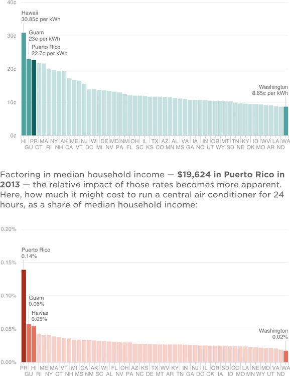

Puerto Rico’s Electric Rates Among Nation’s Highest
Residential electricity prices, in cents per kilowatt hour

Notes
— Power rates are as of February 2015, except Guam, whose rate is as of November 2014.
— Median household income estimates are as of 2013.
— Central air conditioning example assumes that the unit consumes 5 kilowatt hours of electricity per hour.